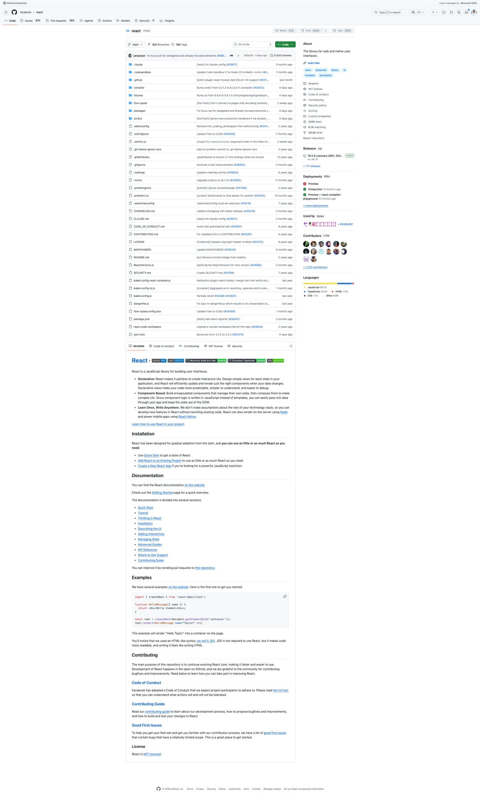
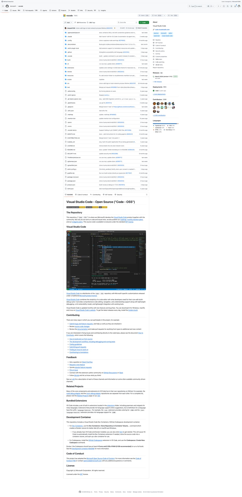
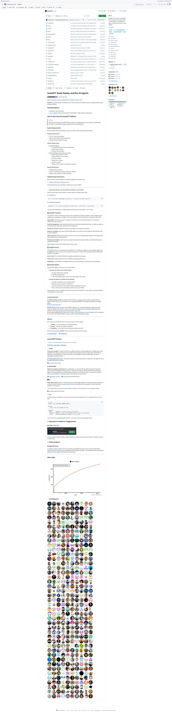
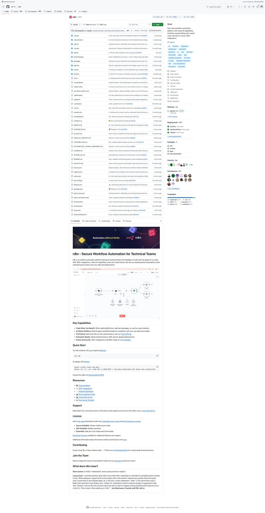
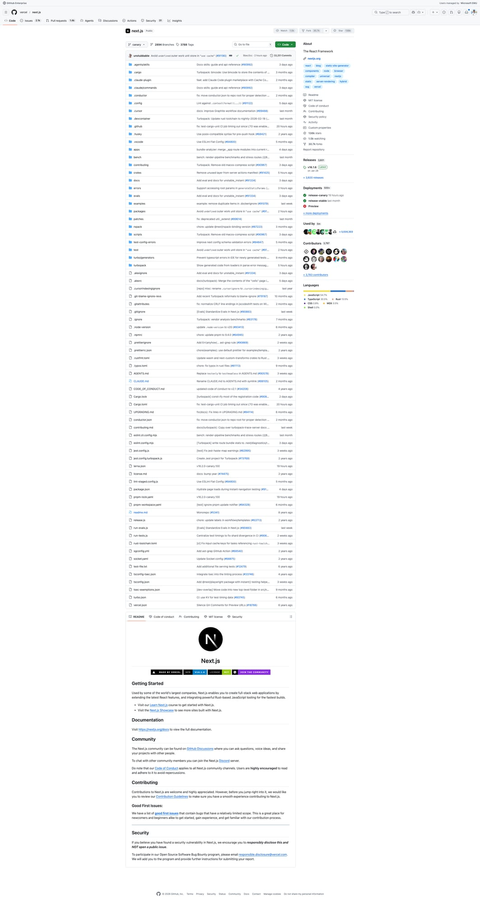

5个Agent Skills新星速报！React错误处理、VSCode Sessions、Next.js Flags等热门技能
Neo整理
Agent Skills 是 AI 编程助手（Claude Code、Codex、Gemini CLI 等）的可复用能力模块。今天我扫描了 SkillsMP 等平台，筛选出来自知名开源项目、实用价值高的热门 Skills。
本期介绍 5 个精选 Skills，涵盖 React 错误处理、VSCode 架构、自动化工作流、API 客户端生成、Next.js 特性开关等领域。
Extract Errors：React 错误消息处理指南
Extract Errors Skill 是 Facebook React 团队的内部开发工具，用于管理 React 框架的错误消息代码。当你在 React 代码库中添加新的错误消息或遇到"unknown error code"警告时自动激活。
💡 核心价值：React 使用错误代码系统来压缩生产环境的错误消息体积。这个 Skill 帮助开发者正确提取和管理错误代码，确保用户在生产环境也能获得清晰的错误追溯。
使用场景：
- 添加新错误消息 — 需要为新错误分配唯一代码
- "unknown error code"警告 — 错误代码映射可能过期
- 调试错误消息 — 查找错误代码对应的完整消息
# 使用方法
yarn extract-errors
# 说明
- 运行后检查是否有新错误需要分配代码
- 确保错误代码映射是最新的
Sessions：VSCode Agent Sessions 窗口架构
Sessions Skill 是 Microsoft VSCode 团队的内部开发指南，详细说明了 Agent Sessions 窗口的架构设计。如果你在开发 VSCode 扩展或想了解 AI 编辑器架构，这是必读材料。
💡 核心价值：理解 VSCode 如何从"编辑器优先"转变为"对话优先"的 UI 架构。Chat Bar 成为主要组件，编辑器变成模态叠加层。
架构要点：
- 分层约束 —
vs/sessions可导入vs/workbench，但反向禁止 - 简化 Chrome — 无活动栏、状态栏、横幅，聚焦对话
- 固定布局 — 不支持设置自定义，保持一致体验
- 编辑器模态 — 编辑器作为模态叠加层而非网格布局的一部分
# 规范文档位置
src/vs/sessions/README.md # 分层规则
src/vs/sessions/LAYOUT.md # 网格结构、CSS 类
src/vs/sessions/AI_CUSTOMIZATIONS.md # AI 自定义
# 验证分层
npm run valid-layers-check
OpenAPI Regen：自动重生成 API 客户端
OpenAPI Regen Skill 来自 AutoGPT 项目，当后端 API 路由变化时自动重新生成 OpenAPI 规范和前端类型客户端。一键完成"启动后端 → 获取规范 → 生成 hooks → lint + format"的完整流程。
💡 核心价值：前后端类型同步的痛点一键解决。支持用户直接调用（user-invocable: true），不仅 AI 自动触发。
触发场景：
- API 路由变更
- 新增端点
- 前端 API 类型过期
# 一键执行（单个 shell 块保持 PID）
cd autogpt_platform/backend && poetry run rest &
REST_PID=$!
WAIT=0; until curl -sf http://localhost:8006/health; do
sleep 1; WAIT=$((WAIT+1)); [ $WAIT -ge 60 ] && exit 1
done
cd ../frontend && pnpm generate:api:force
kill $REST_PID
pnpm types && pnpm lint && pnpm format
# 规则
- 始终用 pnpm generate:api:force
- 不要手动编辑 src/app/api/__generated__/
- 生成的 hooks 命名：use{Method}{Version}{OperationName}
n8n Conventions：自动化工作流开发规范
n8n Conventions Skill 是 n8n 自动化平台的开发速查卡。n8n 是 Zapier/Make 的开源替代品，这个 Skill 帮助你快速了解代码规范和最佳实践。
💡 核心价值：在 AI 编程助手中快速查阅 n8n 的 TypeScript 规范、错误处理、前后端架构。避免踩坑。
关键规则：
- TypeScript — 禁止
any，用unknown；优先satisfies - 错误处理 — 使用
UnexpectedError，不用废弃的ApplicationError - 前端 — Vue 3 Composition API，CSS 变量，i18n
- 后端 — Controller → Service → Repository，依赖注入
- 数据库 — 仅 SQLite/PostgreSQL（应用数据库）
# 错误处理示例
import { UnexpectedError } from 'n8n-workflow';
throw new UnexpectedError('message', { extra: { context } });
# 测试命令
pushd packages/cli && pnpm test
# 完整文档
/AGENTS.md # 架构、命令、工作流
/packages/frontend/AGENTS.md # CSS 变量、动画时间
Flags：Next.js 实验性特性开关指南
Flags Skill 是 Vercel Next.js 团队的内部开发指南，详细说明如何端到端地添加或修改实验性特性开关。当你编辑 config-shared.ts、config-schema.ts、define-env-plugin.ts 等核心配置文件时自动激活。
💡 核心价值：理解 Next.js 的特性开关机制，包括类型声明、zod schema、构建时注入、运行时环境变量传递，以及如何在运行时 env 分支和独立 bundle 变体之间做选择。
必要配线：
- 所有 flags —
config-shared.ts(类型) →config-schema.ts(zod) - 用户打包代码中消费的 flags — 还需要添加到
define-env.ts - 仅运行时 flags — 可跳过
define-env.ts
# 运行时 Bundle 模型
- 运行时 bundles 由 next-runtime.webpack-config.js (rspack) 构建
- Bundle 选择在 module.compiled.js 中基于 process.env 变量进行
- 变体: {turbo/webpack} × {experimental/stable/...} × {dev/prod}
= 每种路由类型最多 16 个 bundles
# 相关 Skills
- $dce-edge - DCE 安全的 require 模式
- $react-vendoring - entry-base 边界和 vendored React
- $runtime-debug - 复现和验证工作流
总结
今天介绍的 5 个 Skills 都来自知名开源项目（React、VSCode、AutoGPT、n8n、Next.js），代表了 Agent Skills 生态的最佳实践：
- 框架开发型 — React Extract Errors、Next.js Flags
- 架构指南型 — VSCode Sessions
- 自动化型 — AutoGPT OpenAPI Regen
- 开发规范型 — n8n Conventions
这些 Skills 的共同特点是：来自大型开源项目的真实需求，解决实际开发痛点，而非玩具示例。如果你正在为 AI 编程助手编写 Skills，这些都是值得学习的范例！